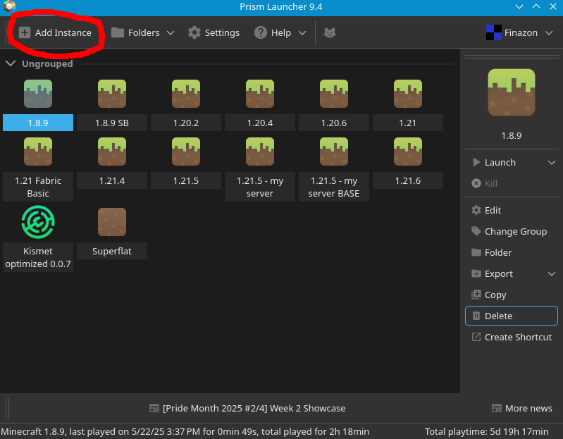
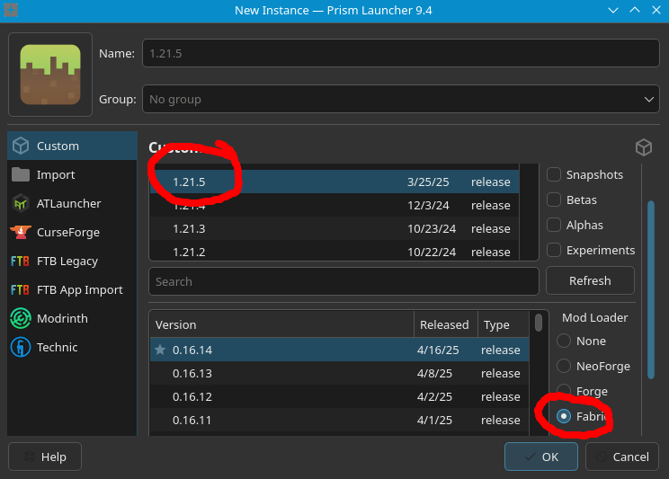
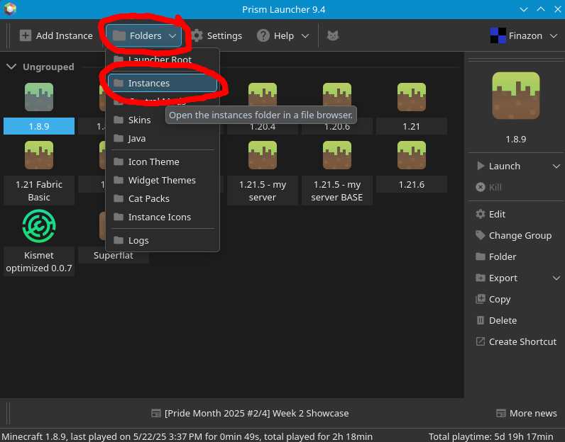
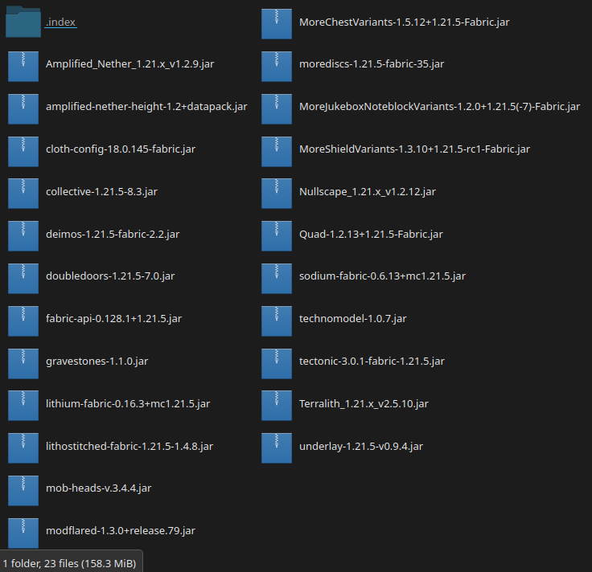

Prism Launcher Guide
By: Finazon
Step 1: Create a New Instance.

Step 2: Select 1.21.5 and Fabric as the mod loader. Give it a name if you would like.

Step 3: Open your Instaces folder as shown below.

Step 4: In your newly opened file explorer, chose the instance you just created. After that select minecraft then mods.
Step 5: Drag the mods.zip (from the main page) folder into the instance's mods folder and extract it. If the extaction created a new folder, move all the mods out of that folder and into the instance's mod folder. It should look like the below image.

Congrats! You have installed all the mods required to play on the server. If you wish to add clientside QoL mods, go ahead. When you are ready to play open minecraft and use the IP on the main page.